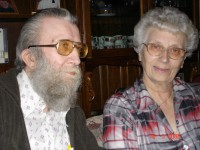

Daniel Torstensen
M, #726, f. omtrent 1711, d. 1786
Foreldre
Biografi
Daniel Torstensen ble født omtrent 1711. Han giftet seg med
Maren Adriansdatter Hamland den 8 november 1747. Han giftet seg med
Maren Olsdatter den 9 august 1754. Han døde i 1786 på/i Hamland, Nærøy, Nord-Trøndelag.
Daniel Torstensen was also known as Daniel Storval.
| Sist redigert |
26 februar 2021 00:00:00 |
| Slektskap | 5. tippoldefar til Håkon Wahl |
Maren Adriansdatter Hamland
K, #727, f. 1716, d. omtrent 1751
Foreldre
Biografi
Maren Adriansdatter Hamland ble født i 1716 Hamland, Nærøy, Nord-Trøndelag. Hun giftet seg med
Niels Jonsen den 7 juli 1737. Hun giftet seg med
Daniel Torstensen den 8 november 1747. Hun døde omtrent 1751 på/i Hamland, Nærøy, Nord-Trøndelag.
| Sist redigert |
11 februar 2021 00:00:00 |
| Slektskap | 5. tippoldemor til Håkon Wahl |
Hartvik Angel Rødli
M, #728, f. 5 desember 1943, d. 3 november 2025

Grethe Aaneng og Hartvik Rødli
Biografi
Hartvik Angel Rødli ble født den 5 desember 1943. Han ble samboer med Grethe Aaneng datter av
Osvald Neumann Aaneng og
Asbjørg Gunhilde Foss. Hartvik Angel Rødli døde den 3 november 2025 på/i Sykehuset Namsos, Namsos, Trøndelag.
| Sist redigert |
7 november 2025 10:42:39 |
Karl Ludvig Olsen Rønningen
M, #729, f. 12 mai 1878, d. 11 juni 1938
Foreldre
Biografi
Karl Ludvig Olsen Rønningen ble født den 12 mai 1878 Rønningen, Otterøy, Nord-Trøndelag. Han giftet seg med
Lise Karoline Haug den 13 september 1917 på/i Otterøy, Nord-Trøndelag. Han døde den 11 juni 1938 på/i Granheim, Otterøy, Nord-Trøndelag.
Karl Ludvig Olsen Rønningen ble døpt den 4 august 1878 på/i Vik sogn, Nord-Trøndelag. Han ble konfirmert den 15 oktober 1893 på/i Otterøy, Nord-Trøndelag.
| Sist redigert |
18 mai 2024 19:01:04 |
Adrian Andersen Hamland
M, #730, f. omtrent 1686, d. 1749
Foreldre
Biografi
Adrian Andersen Hamland ble født omtrent 1686 Hamland, Nærøy, Nord-Trøndelag. Han giftet seg med
Ellen Sørensdatter Aarøe. Han døde i 1749 på/i Hamland, Nærøy, Nord-Trøndelag.
Adrian Andersen Hamland was also known as Adrian Falch.
| Sist redigert |
15 februar 2021 00:00:00 |
| Slektskap | 6. tippoldefar til Håkon Wahl |
Ellen Sørensdatter Aarøe
K, #731, f. omtrent 1681, d. 1752
Foreldre
Biografi
Ellen Sørensdatter Aarøe ble født omtrent 1681 Røros, Sør-Trøndelag. Hun giftet seg med
Adrian Andersen Hamland. Hun døde i 1752 på/i Hamland, Nærøy, Nord-Trøndelag.
| Sist redigert |
9 september 2010 00:00:00 |
| Slektskap | 6. tippoldemor til Håkon Wahl |
Anders Adriansen
M, #732, f. 1659, d. 1710
Foreldre
Biografi
Anders Adriansen ble født i 1659 Hamland, Nærøy, Nord-Trøndelag. Han giftet seg med
Maren Olufsdatter Storch. Han døde i 1710 på/i Hamland, Nærøy, Nord-Trøndelag.
Anders Adriansen was also known as Anders Hamland. Han was also known as Anders Falch.
| Sist redigert |
28 februar 2021 00:00:00 |
| Slektskap | 7. tippoldefar til Håkon Wahl |
Maren Olufsdatter Storch
K, #733, f. 1663, d. 1719
Foreldre
Biografi
Maren Olufsdatter Storch ble født i 1663 Trondheim, Sør-Trøndelag. Hun giftet seg med
Anders Adriansen. Hun døde i 1719 på/i Hamland, Nærøy, Nord-Trøndelag.
| Sist redigert |
28 februar 2021 00:00:00 |
| Slektskap | 7. tippoldemor til Håkon Wahl |
Adrian Jensen Hamland
M, #734, f. omtrent 1617, d. 1678
Foreldre
Biografi
Adrian Jensen Hamland ble født omtrent 1617 Lofoten, Nordland. Han giftet seg med
Anne Hansdatter Kruse før 1650. Han døde i 1678 på/i Hamland, Nærøy, Nord-Trøndelag.
Adrian Jensen Hamland was also known as Adrian Jacobsen Falck. Han og
Adrian Jacobsøn Falch. blir i forskjellige kilder forvekslet med hverandre. Adrian Jensen Hamland. var jekteskipper - hadde et par jekter som seilte Nord-Norge - Bergen. Kjøpte Hamland før 1640. Han bodde på/i Hamland, Nærøy, Nord-Trøndelag.
| Sist redigert |
29 mai 2023 16:35:55 |
| Slektskap | 8. tippoldefar til Håkon Wahl |
Susanne Jensdatter Schance
K, #735, f. omtrent 1622, d. 29 april 1671
Foreldre
Biografi
Susanne Jensdatter Schance ble født omtrent 1622. Hun giftet seg med
Ole Nielsen Storch omtrent 1660. Hun døde den 29 april 1671 på/i Trondheim, Sør-Trøndelag.
Susanne Jensdatter Schance was also known as Synnøve Schance. Hun was also known as Synneve Schance. Hun was also known as Synnøve Jensdatter Kruse. Hun was also known as Susanne Jensdatter Schanche. Hun ble født omtrent 1640 Trondheim, Sør-Trøndelag.
| Sist redigert |
4 mai 2026 08:26:19 |
| Slektskap | 8. tippoldemor til Håkon Wahl |
Dorothea Torbergsdatter Horvereid
K, #736, f. 1781, d. 13 mai 1848
Foreldre
Biografi
Dorothea Torbergsdatter Horvereid ble født i 1781 Horvereid; Kolvereid, Nærøy, Nord-Trøndelag. Hun giftet seg med
John Jensen Storval den 17 oktober 1804. Hun døde den 13 mai 1848 på/i Nærøy, Nord-Trøndelag.
| Sist redigert |
9 september 2010 00:00:00 |
| Slektskap | 3. tippoldemor til Håkon Wahl |
John Jensen Storval
M, #737, f. 1780, d. 16 september 1852
Foreldre
Biografi
John Jensen Storval ble født i 1780 Storval, Nærøy, Nord-Trøndelag. Han giftet seg med
Dorothea Torbergsdatter Horvereid den 17 oktober 1804. Han døde den 16 september 1852 på/i Horvereid; Kolvereid, Nærøy, Nord-Trøndelag.
| Sist redigert |
9 september 2010 00:00:00 |
| Slektskap | 3. tippoldefar til Håkon Wahl |
Marit Thomasdatter
K, #738, f. før 1666, d. før 1695
Biografi
Marit Thomasdatter ble født før 1666. Hun giftet seg med
Søren Ibsen Aarøe. Hun døde før 1695.
| Sist redigert |
17 november 2012 00:00:00 |
| Slektskap | 7. tippoldemor til Håkon Wahl |
Jon Andersen
M, #739, f. omtrent 1641
Biografi
Jon Andersen ble født omtrent 1641. Han giftet seg med
Kirsten Kirsten. Han døde på/i Storeval, Nærøy, Nord-Trøndelag.
Jon Andersen was also known as Jon Storval. Han. svarte leidangskatt med 4 1/2 merker smør og 9 merker mjøl i 1709.
| Sist redigert |
9 september 2010 00:00:00 |
| Slektskap | 6. tippoldefar til Håkon Wahl |
Ellen Eriksdatter
K, #740, f. før 1731, d. etter 1762
Biografi
| Sist redigert |
9 september 2010 00:00:00 |
| Slektskap | 4. tippoldemor til Håkon Wahl |
Torberg Barugsen
M, #741, f. omtrent 1685
Foreldre
Biografi
Torberg Barugsen ble født omtrent 1685 Horvereid; Kolvereid, Nærøy, Nord-Trøndelag.
Torberg Barugsen brukte i 1723 Horven gnr 35 - løpenr. 300, Kolvereid, Nærøy, Nord-Trøndelag.
| Sist redigert |
9 september 2010 00:00:00 |
| Slektskap | 5. tippoldefar til Håkon Wahl |
Barug Nilsen
M, #742, f. omtrent 1624, d. etter 1709
Biografi
Barug Nilsen ble født omtrent 1624. Han døde etter 1709 på/i Horvereid III, Horvereid; Kolvereid, Nærøy, Nord-Trøndelag.
Barug Nilsen brukte i 1664 Horvereid, Horvereid; Kolvereid, Nærøy, Nord-Trøndelag.
| Sist redigert |
9 september 2010 00:00:00 |
| Slektskap | 6. tippoldefar til Håkon Wahl |
Jens Jensen Nakling
M, #743, f. 1743, d. juli 1803
Foreldre
Biografi
Jens Jensen Nakling ble født i 1743 Nakling; Kolvereid, Nærøy, Nord-Trøndelag. Han giftet seg med
Martha Jonsdatter Strand den 9 oktober 1771. Han døde i juli 1803 på/i Storval, Nærøy, Nord-Trøndelag.
| Sist redigert |
9 september 2010 00:00:00 |
| Slektskap | 4. tippoldefar til Håkon Wahl |
Martha Jonsdatter Strand
K, #744, f. 1743, d. 1803
Foreldre
Biografi
Martha Jonsdatter Strand ble født i 1743 Strand, Nærøy, Nord-Trøndelag. Hun giftet seg med
Jens Jensen Nakling den 9 oktober 1771. Hun døde i 1803 på/i Storval, Nærøy, Nord-Trøndelag.
| Sist redigert |
9 september 2010 00:00:00 |
| Slektskap | 4. tippoldemor til Håkon Wahl |
Joen Larsen
M, #745, f. før 1719
Biografi
Joen Larsen ble født før 1719. Han giftet seg med
Elen Olsdatter. Han døde på/i Strand, Nærøy, Nord-Trøndelag.
| Sist redigert |
9 september 2010 00:00:00 |
| Slektskap | 5. tippoldefar til Håkon Wahl |
Elen Olsdatter
K, #746, f. omtrent 1716, d. 1789
Biografi
Elen Olsdatter ble født omtrent 1716. Hun giftet seg med
Joen Larsen. Hun døde i 1789 på/i Strand, Nærøy, Nord-Trøndelag.
| Sist redigert |
9 september 2010 00:00:00 |
| Slektskap | 5. tippoldemor til Håkon Wahl |
Jens Olsen Nakling
M, #747, f. omtrent 1700
Biografi
Jens Olsen Nakling ble født omtrent 1700. Han giftet seg med
Daaret Jensdatter Kruse. Han døde på/i Horvereid; Kolvereid, Nærøy, Nord-Trøndelag.
Jens Olsen Nakling bygslet den 3 juli 1732 Nakling 28/1;3, Horvereid; Kolvereid, Nærøy, Nord-Trøndelag.
| Sist redigert |
9 september 2010 00:00:00 |
| Slektskap | 5. tippoldefar til Håkon Wahl |
Daaret Jensdatter Kruse
K, #748, f. før 1708, d. 1768
Biografi
Daaret Jensdatter Kruse ble født før 1708 Nord-Trøndelag. Hun giftet seg med
Jens Olsen Nakling. Hun døde i 1768 på/i Nakling; Kolvereid, Nærøy, Nord-Trøndelag.
| Sist redigert |
25 mars 2020 00:00:00 |
| Slektskap | 5. tippoldemor til Håkon Wahl |
Ole Eliassen Mulstad
M, #749, f. 1764, d. 12 juni 1836
Biografi
Ole Eliassen Mulstad ble født i 1764. Han giftet seg med
Anne Anfinsdatter. Han døde den 12 juni 1836 på/i Nærøy, Nord-Trøndelag.
| Sist redigert |
9 september 2010 00:00:00 |
| Slektskap | 4. tippoldefar til Håkon Wahl |
Anne Anfinsdatter
K, #750, f. omtrent 1757, d. 20 august 1831
Foreldre
Biografi
Anne Anfinsdatter ble født omtrent 1757. Hun giftet seg med
Ole Eliassen Mulstad. Hun døde den 20 august 1831 på/i Nærøy, Nord-Trøndelag.
| Sist redigert |
9 september 2010 00:00:00 |
| Slektskap | 4. tippoldemor til Håkon Wahl |
{kind=link}